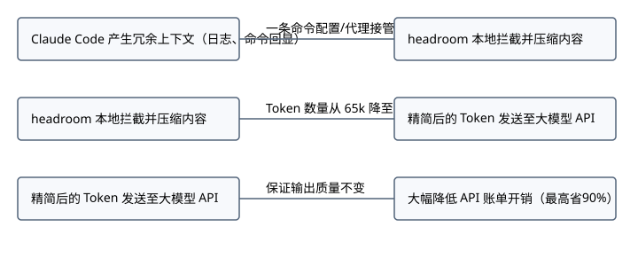

# Using Claude Code Efficiently ## High Costs of API Usage [00:00-00:22] ### Key Insight A [00:00-00:22] - The API bill for using Claude Code can be unexpectedly high. - A significant portion of the charges arises from excessive context. - The AI re-reads logs, files, and command outputs that often contain redundant information. ### Key Insight B [00:00-00:22] - The money is not spent on the AI model but on the unnecessary context. - Paying for every single word adds to the overall costs. ## Introduction to Headroom Tool [00:22-00:48] ### Functionality Overview [00:22-00:48] - Headroom is an open-source tool on GitHub with 49,000 stars. - It compresses content before sending to a large model. - In official testing, 65,000 tokens were reduced to just over 5,000 without altering the answer. ### Testing Effectiveness [00:22-00:48] - The compression process does not change any actual response content. - This showcases the efficiency of the tool in reducing token usage. ## Cost-Effective and Secure Deployment [00:48-01:08] ### Deployment Advantages [00:48-01:08] - Headroom can be deployed at almost zero cost with a single command. - It can take over Claude Code or run as a proxy without changing the code. ### Data Privacy Benefits [00:48-01:08] - The original text remains on the local machine. - Users can access complete data at any time, ensuring local privacy and security. ## Compression Efficiency Comparison [01:08-01:27] ### Compression Savings [01:08-01:27] - The savings from compression vary based on the content type. - Structured data like logs and code can see reductions of 80 to 90 percent. - Unstructured chat content typically realizes only 20 to 30 percent savings. ### Conclusion on Effectiveness [01:08-01:27] - While the tool is beneficial, the extent of savings depends on the data being compressed. - The approach taken by Headroom is definitely a step in the right direction.

Using Claude Code every day to write things, looking at the API bill at the end of the month is really painful. I only realized later that the money isn't actually being spent on the model, but on that pile of useless context—every time, the AI has to re-read the entire stack of logs, files, and command outputs, most of which is useless fluff, and you're paying for every single word. There is an open-source tool on GitHub with 49,000 stars called headroom, specifically designed for this: compressing content before sending it to a large model. In an official test during a troubleshooting case, 65,000 tokens were compressed down to just over 5,000, and the answer didn't change by a single word. The best part is that it's practically zero-cost: a single command takes over your Claude Code, or spins up a proxy, without changing a single word of code. The original text stays on your local machine, so you can pull up the full version whenever you want, and your data never leaves your computer. Of course, don't overhype it either. How much it saves depends on what you're compressing — structured data like logs and code can be cut by 80 to 90 percent, while pure chat is only around 20 to 30 percent. But the direction is definitely right.